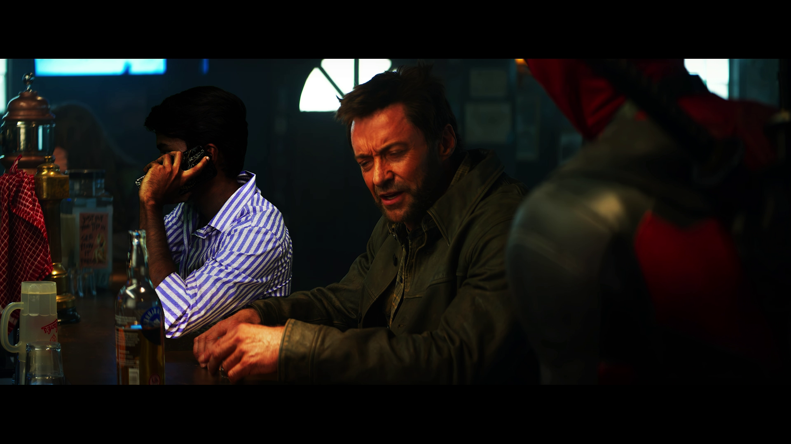

Wipes & Digital Ageing
Overview
A specialized VFX project examining the mechanics of invisible editorial transitions, kinetic wipe cuts, and high-precision digital cosmetic ageing across narrative cinema sequences.
Process & Contribution
Engineered optical wipe transitions using occluding foreground geometry, motion vectors, and whip pans to disguise edit points. For digital ageing, executed facial feature tracking, painted photorealistic skin texture maps, and blended procedural wrinkles while preserving organic actor performance.
Wipes & Digital Ageing Breakdown
Deadpool Kinetic Wipe
Visual Gallery

Tools & Technologies
After Effects
Adobe Photoshop
Premiere Pro